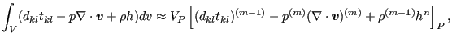
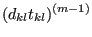
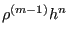
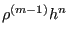

Next: Density update Up: Conservation of Energy (compressible Previous: Diffusion term Contents
This term amounts to:
|  | (652) |
where
|  | ![$\displaystyle = \mu ^{(m-1)} \left ( 2 \left [ \left ( \frac{\partial v_1}{\par...
... \left ( \frac{\partial v_3}{\partial x_3} \right ) ^2 \right ] ^{(m)} \right .$](img1933.png) |
|
![$\displaystyle + \left [ \left ( \frac{\partial v_1}{\partial x_2} + \frac{\part...
...}{\partial x_3} + \frac{\partial v_3}{\partial x_2} \right ) ^2 \right ] ^{(m)}$](img1934.png) |
||
| (653) |
All terms are evaluated at iteration  except for the dynamic
viscosity. Whether they end up on the right or left hand side of the system of
equations depends on their sign. It has proven advantageous for the stability
to include positive source terms on the right hand side and negative source
terms (sinks) on the left hand side. Consequently, the terms on the first two
lines in Equation (653) end up on the right hand side, the term on
the third line on the left hand side. Similarly, if
and
 are positive they end up on the
right hand side, else on the left hand side. A term which is moved to the left
hand side has to be divided by
and multiplied by
except for the dynamic
viscosity. Whether they end up on the right or left hand side of the system of
equations depends on their sign. It has proven advantageous for the stability
to include positive source terms on the right hand side and negative source
terms (sinks) on the left hand side. Consequently, the terms on the first two
lines in Equation (653) end up on the right hand side, the term on
the third line on the left hand side. Similarly, if
and
 are positive they end up on the
right hand side, else on the left hand side. A term which is moved to the left
hand side has to be divided by
and multiplied by
 in order to fit in the equation system. For instance, if the heat source
is negative,
is rewritten as:
in order to fit in the equation system. For instance, if the heat source
is negative,
is rewritten as:
| (654) |
at element center P.